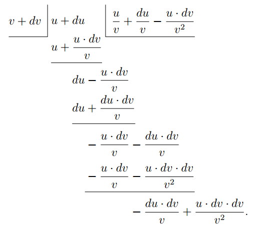

We have learned how to differentiate simple algebraical functions such as $x^2 + c$ or $ax^4$, and we have now to consider how to tackle the sum of two or more functions.
For instance, let \[ y = (x^2+c) + (ax^4+b); \] what will its $\dfrac{dy}{dx}$ be? How are we to go to work on this new job?
The answer to this question is quite simple: just differentiate them, one after the other, thus: \[ \dfrac{dy}{dx} = 2x + 4ax^3. (Ans.) \]
If you have any doubt whether this is right, try a more general case, working it by first principles. And this is the way.
Let $y = u+v$, where $u$ is any function of $x$, and $v$ any other function of $x$. Then, letting $x$ increase to $x+dx$, $y$ will increase to $y+dy$; and $u$ will increase to $u+du$; and $v$ to $v+dv$.
And we shall have:
$ y+dy = u+du + v+dv.$
Subtracting the original $y = u+v$, we get
$dy = du+dv, $
and dividing through by $dx$, we get:
$\dfrac{dy}{dx} = \dfrac{du}{dx} + \dfrac{dv}{dx}.$
This justifies the procedure. You differentiate each function separately and add the results. So if now we take the example of the preceding paragraph, and put in the values of the two functions, we shall have, using the notation shown (chapter III), \begin{alignat*}{2} \frac{dy}{dx} & = \frac{d(x^2+c)}{dx} &&+ \frac{d(ax^4+b)}{dx} \\ & = 2x &&+ 4ax^3, \end{alignat*} exactly as before.
If there were three functions of $x$, which we may call $u$, $v$ and $w$, so that \begin{align*} y &= u+v+w; \\ \text{then}\; \frac{dy}{dx} &= \frac{du}{dx} + \frac{dv}{dx} + \frac{dw}{dx}. \end{align*}
As for subtraction, it follows at once; for if the function $v$ had itself had a negative sign, its differential coefficient would also be negative; so that by differentiating \begin{align*} y &= u-v, \\ \text{ we should get}\; \frac{dy}{dx} &= \frac{du}{dx} - \frac{dv}{dx}. \end{align*}
But when we come to do with Products, the thing is not quite so simple.
Suppose we were asked to differentiate the expression \[ y = (x^2+c) × (ax^4+b), \] what are we to do? The result will certainly not be $2x × 4ax^3$; for it is easy to see that neither $c × ax^4$, nor $x^2 × b$, would have been taken into that product.
Now there are two ways in which we may go to work.
First way. Do the multiplying first, and, having worked it out, then differentiate.
Accordingly, we multiply together $x^2 + c$ and $ax^4 + b$.
This gives $ax^6 + acx^4 + bx^2 + bc$.
Now differentiate, and we get: \[ \dfrac{dy}{dx} = 6ax^5 + 4acx^3 + 2bx. \]
Second way. Go back to first principles, and consider the equation \[ y = u × v; \] where $u$ is one function of $x$, and $v$ is any other function of $x$. Then, if $x$ grows to be $x+dx$; and $y$ to $y+dy$; and $u$ becomes $u+du$, and $v$ becomes $v+dv$, we shall have: \begin{align*} y + dy &= (u + du) × (v + dv) \\ &= u · v + u · dv + v · du + du · dv. \end{align*}
Now $du · dv$ is a small quantity of the second order of smallness, and therefore in the limit may be discarded, leaving \[ y + dy = u · v + u · dv + v · du. \]
Then, subtracting the original $y = u· v$, we have left \[ dy = u · dv + v · du; \] and, dividing through by $dx$, we get the result: \[ \dfrac{dy}{dx} = u\, \dfrac{dv}{dx} + v\, \dfrac{du}{dx}. \]
This shows that our instructions will be as follows: To differentiate the product of two functions, multiply each function by the differential coefficient of the other, and add together the two products so obtained.
You should note that this process amounts to the following: Treat $u$ as constant while you differentiate $v$; then treat $v$ as constant while you differentiate $u$; and the whole differential coefficient $\dfrac{dy}{dx}$ will be the sum of these two treatments.
Now, having found this rule, apply it to the concrete example which was considered above.
We want to differentiate the product \[ (x^2 + c) × (ax^4 + b). \]
Call $(x^2 + c) = u$; and $(ax^4 + b) = v$.
Then, by the general rule just established, we may write: \begin{alignat*}{2} \dfrac{dy}{dx} &= (x^2 + c)\, \frac{d(ax^4 + b)}{dx} &&+ (ax^4 + b)\, \frac{d(x^2 + c)}{dx} \\ &= (x^2 + c)\, 4ax^3 &&+ (ax^4 + b)\, 2x \\ &= 4ax^5 + 4acx^3 &&+ 2ax^5 + 2bx, \\ \dfrac{dy}{dx} &= 6ax^5 + 4acx^3 &&+ 2bx, \end{alignat*} exactly as before.
Lastly, we have to differentiate quotients.
Think of this example, $y = \dfrac{bx^5 + c}{x^2 + a}$. In such a case it is no use to try to work out the division beforehand, because $x^2 + a$ will not divide into $bx^5 + c$, neither have they any common factor. So there is nothing for it but to go back to first principles, and find a rule. So we will put \[ y = \frac{u}{v}; \] where $u$ and $v$ are two different functions of the independent variable $x$. Then, when $x$ becomes $x + dx$, $y$ will become $y + dy$; and $u$ will become $u + du$; and $v$ will become $v + dv$. So then \[ y + dy = \dfrac{u + du}{v + dv}. \]
Now perform the algebraic division, thus:

As both these remainders are small quantities of
the second order, they may be neglected, and the
division may stop here, since any further remainders
would be of still smaller magnitudes.
So we have got:
\begin{align*}
y + dy &= \dfrac{u}{v} + \dfrac{du}{v} - \dfrac{u· dv}{v^2}; \\
\end{align*}
which may be written
\begin{align*}
&= \dfrac{u}{v} + \dfrac{v· du - u· dv}{v^2}. \\
\end{align*}
Now subtract the original $y = \dfrac{u}{v}$, and we have left:
\begin{align*}
dy &= \dfrac{v· du - u· dv}{v^2}; \\
\text{whence}\;
\dfrac{dy}{dx}
&= \dfrac{v\, \dfrac{du}{dx} - u\, \dfrac{dv}{dx}}{v^2}.
\end{align*}
This gives us our instructions as to how to differentiate
a quotient of two functions. Multiply the
divisor function by the differential coefficient of
the dividend function; then multiply the dividend
function by the differential coefficient of the divisor
function; and subtract. Lastly divide by the square
of the divisor function.
Going back to our example $y = \dfrac{bx^5 + c}{x^2 + a}$,
\begin{align*}
\text{ write}\;
bx^5 + c &= u; \\
\text{and}\;
x^2 + a &= v.
\end{align*}
Then
\begin{align*}
\frac{dy}{dx}
&= \frac{(x^2 + a)\, \dfrac{d(bx^5 + c)}{dx} - (bx^5 + c)\, \dfrac{d(x^2 + a)}{dx}}{(x^2 + a)^2} \\
&= \frac{(x^2 + a)(5bx^4) - (bx^5 + c)(2x)}{(x^2 + a)^2}, \\
\frac{dy}{dx}
&= \frac{3bx^6 + 5abx^4 - 2cx}{(x^2 + a)^2}.\quad\text{(Answer.)}
\end{align*}
The working out of quotients is often tedious, but
there is nothing difficult about it.
Some further examples fully worked out are given
hereafter.
(1) Differentiate $y = \dfrac{a}{b^2} x^3 - \dfrac{a^2}{b} x + \dfrac{a^2}{b^2}$.
Being a constant, $\dfrac{a^2}{b^2}$ vanishes,
and we have
\[
\frac{dy}{dx} = \frac{a}{b^2} × 3 × x^{3-1} - \frac{a^2}{b} × 1 × x^{1-1}.
\]
But $x^{1-1} = x^0 = 1$; so we get:
\[
\frac{dy}{dx} = \frac{3a}{b^2} x^2 - \frac{a^2}{b}.
\]
(2) Differentiate $y = 2a\sqrt{bx^3} - \dfrac{3b \sqrt[3]{a}}{x} - 2\sqrt{ab}$.
Putting $x$ in the index form, we get
\[
y = 2a\sqrt{b} x^{\frac{3}{2}} - 3b \sqrt[3]{a} x^{-1} - 2\sqrt{ab}.
\]
Now
\[
\frac{dy}{dx} = 2a\sqrt{b} × \tfrac{3}{2} × x^{\frac{3}{2}-1} - 3b\sqrt[3]{a} × (-1) × x^{-1-1}; \\
\text{or, }\;
\frac{dy}{dx} = 3a\sqrt{bx} + \frac{3b\sqrt[3]{a}}{x^2}.
\]
(3) Differentiate $z = 1.8 \sqrt[3]{\dfrac{1}{\theta^2}} - \dfrac{4.4}{\sqrt[5]{\theta}} - 27°$.
This may be written: $z= 1.8\, \theta^{-\frac{2}{3}} - 4.4\, \theta^{-\frac{1}{5}} - 27°$.
The $27°$ vanishes, and we have
\[
\frac{dz}{d\theta}
= 1.8 × -\tfrac{2}{3} × \theta^{-\frac{2}{3}-1}
- 4.4 × \left(-\tfrac{1}{5}\right)\theta^{-\frac{1}{5}-1}; \\
\text{or}\;,
\frac{dz}{d\theta}
= -1.2\, \theta^{-\frac{5}{3}} + 0.88\, \theta^{-\frac{6}{5}}; \\
\text{or,}\;
\frac{dz}{d\theta} = \frac{0.88}{\sqrt[5]{\theta^6}}
- \frac{1.2}{\sqrt[3]{\theta^5}}.
\]
(4) Differentiate $v = (3t^2 - 1.2 t + 1)^3$.
A direct way of doing this will be explained later
(see here); but we can nevertheless manage it now
without any difficulty.
Developing the cube, we get
\[
v = 27t^6 - 32.4t^5 + 39.96t^4 - 23.328t^3 + 13.32t^2 - 3.6t + 1;
\]
hence
\[
\frac{dv}{dt} = 162t^5 - 162t^4 + 159.84t^3 - 69.984t^2 + 26.64t - 3.6.
\]
(5) Differentiate $y = (2x - 3)(x + 1)^2$.
\begin{alignat*}{2}
\frac{dy}{dx}
&= (2x - 3)\, \frac{d\bigl[(x + 1)(x + 1)\bigr]}{dx}
&&+ (x + 1)^2\, \frac{d(2x - 3)}{dx} \\
&= (2x - 3) \left[(x + 1)\, \frac{d(x + 1)}{dx}\right.
&&+ \left.(x + 1)\, \frac{d(x + 1)}{dx}\right] \\
& &&+ (x + 1)^2\, \frac{d(2x - 3)}{dx} \\
&= 2(x + 1)\bigl[(2x - 3) + (x + 1)\bigr] &&= 2(x + 1)(3x - 2)
\end{alignat*}
or, more simply, multiply out and then differentiate.
(6) Differentiate $y = 0.5 x^3(x-3)$.
\begin{align*}
\frac{dy}{dx}
&= 0.5\left[x^3 \frac{d(x-3)}{dx} + (x-3) \frac{d(x^3)}{dx}\right] \\
&= 0.5\left[x^3 + (x-3) × 3x^2\right] = 2x^3 - 4.5x^2.
\end{align*}
Same remarks as for preceding example.
(7) Differentiate $w = \left(\theta + \dfrac{1}{\theta}\right)
\left(\sqrt{\theta} + \dfrac{1}{\sqrt{\theta}}\right)$.
This may be written
\begin{gather*}
w = (\theta + \theta^{-1})(\theta^{\frac{1}{2}} + \theta^{-\frac{1}{2}}). \\
\begin{aligned}
\frac{dw}{d\theta}
&= (\theta + \theta^{-1})
\frac{d(\theta^{\frac{1}{2}} + \theta^{-\frac{1}{2}})}{d\theta}
+ (\theta^{\frac{1}{2}} + \theta^{-\frac{1}{2}})
\frac{d(\theta+\theta^{-1})}{d\theta} \\
&= (\theta + \theta^{-1})(\tfrac{1}{2}\theta^{-\frac{1}{2}}
- \tfrac{1}{2}\theta^{-\frac{3}{2}})
+ (\theta^{\frac{1}{2}} + \theta^{-\frac{1}{2}})(1 - \theta^{-2}) \\
&= \tfrac{1}{2}(\theta^{ \frac{1}{2}} + \theta^{-\frac{3}{2}}
- \theta^{-\frac{1}{2}} - \theta^{-\frac{5}{2}})
+ (\theta^{ \frac{1}{2}} + \theta^{-\frac{1}{2}}
- \theta^{-\frac{3}{2}} - \theta^{-\frac{5}{2}}) \\
&= \tfrac{3}{2} \left(\sqrt{\theta} - \frac{1}{\sqrt{\theta^5}}\right)
+ \tfrac{1}{2} \left(\frac{1}{\sqrt{\theta}} - \frac{1}{\sqrt{\theta^3}}\right).
\end{aligned}
\end{gather*}
This, again, could be obtained more simply by
multiplying the two factors first, and differentiating
afterwards. This is not, however, always possible;
see, for instance, here, example 8, in which the
rule for differentiating a product must be used.
(8) Differentiate $y =\dfrac{a}{1 + a\sqrt{x} + a^2x}$.
\begin{align*}
\frac{dy}{dx}
&= \frac{(1 + ax^{\frac{1}{2}} + a^2x) × 0 - a\dfrac{d(1 + ax^{\frac{1}{2}} + a^2x)}{dx}}
{(1 + a\sqrt{x} + a^2x)^2} \\
&= - \frac{a(\frac{1}{2}ax^{-\frac{1}{2}} + a^2)}
{(1 + ax^{\frac{1}{2}} + a^2x)^2}.
\end{align*}
(9) Differentiate $y = \dfrac{x^2}{x^2 + 1}$.
\[
\dfrac{dy}{dx} = \dfrac{(x^2 + 1)\, 2x - x^2 × 2x}{(x^2 + 1)^2} = \dfrac{2x}{(x^2 + 1)^2}.
\]
(10) Differentiate $y = \dfrac{a + \sqrt{x}}{a - \sqrt{x}}$.
In the indexed form, $y = \dfrac{a + x^{\frac{1}{2}}}{a - x^{\frac{1}{2}}}$.
\[
\frac{dy}{dx}
= \frac{(a - x^{\frac{1}{2}})( \tfrac{1}{2} x^{-\frac{1}{2}})
- (a + x^{\frac{1}{2}})(-\tfrac{1}{2} x^{-\frac{1}{2}})}
{(a - x^{\frac{1}{2}})^2}
= \frac{ a - x^{\frac{1}{2}}
+ a + x^{\frac{1}{2}}}
{2(a - x^{\frac{1}{2}})^2\, x^{\frac{1}{2}}}; \\
\text{hence}\;
\frac{dy}{dx} = \frac{a}{(a - \sqrt{x})^2\, \sqrt{x}}.
\]
(11) Differentiate
\begin{align*}
\theta &= \frac{1 - a \sqrt[3]{t^2}}{1 + a \sqrt[2]{t^3}}. \\
\text{Now}\;
\theta &= \frac{1 - at^{\frac{2}{3}}}{1 + at^{\frac{3}{2}}}.
\end{align*}
\begin{align*}
\frac{d\theta}{dt}
&= \frac{(1 + at^{\frac{3}{2}}) (-\tfrac{2}{3} at^{-\frac{1}{3}})
- (1 - at^{\frac{2}{3}}) × \tfrac{3}{2} at^{\frac{1}{2}}}
{(1 + at^{\frac{3}{2}})^2} \\
&= \frac{5a^2 \sqrt[6]{t^7} - \dfrac{4a}{\sqrt[3]{t}} - 9a \sqrt[2]{t}}
{6(1 + a \sqrt[2]{t^3})^2}.
\end{align*}
(12) A reservoir of square cross-section has sides
sloping at an angle of $45°$ with the vertical. The side
of the bottom is $200$ feet. Find an expression for the
quantity pouring in or out when the depth of water
varies by $1$ foot; hence find, in gallons, the quantity
withdrawn hourly when the depth is reduced from
$14$ to $10$ feet in $24$ hours.
The volume of a frustum of pyramid of height $H$,
and of bases $A$ and $a$, is $V = \dfrac{H}{3} (A + a + \sqrt{Aa} )$. It is
easily seen that, the slope being $45°$, if the depth be
$h$, the length of the side of the square surface of the
water is $200 + 2h$ feet, so that the volume of water is
\[
\dfrac{h}{3} [200^2 + (200 + 2h)^2 + 200(200 + 2h)]
= 40,000h + 400h^2 + \dfrac{4h^3}{3}.
\]
$\dfrac{dV}{dh} = 40,000 + 800h + 4h^2 = {}$ cubic feet per foot of depth
variation. The mean level from $14$ to $10$ feet is
$12$ feet, when $h = 12$, $\dfrac{dV}{dh} = 50,176$ cubic feet.
Gallons per hour corresponding to a change of depth
of $4$ ft. in $24$ hours ${} = \dfrac{4 × 50,176 × 6.25}{24} = 52,267$ gallons.
(13) The absolute pressure, in atmospheres, $P$, of
saturated steam at the temperature $t°$ C. is given by
Dulong as being $P = \left( \dfrac{40 + t}{140} \right)^5$ as long as $t$ is above
$80°$. Find the rate of variation of the pressure with
the temperature at $100°$ C.
Expand the numerator by the binomial theorem
(see here).
\[
P = \frac{1}{140^5} (40^5 + 5×40^4 t + 10 × 40^3 t^2 + 10 × 40^2 t^3
+ 5 × 40t^4 + t^5);
\]
\begin{align*}
\text{hence}\; \dfrac{dP}{dt} = &\dfrac{1}{537,824 × 10^5}\\
&(5 × 40^4 + 20 × 40^3 t + 30 × 40^2 t^2 + 20 × 40t^3 + 5t^4),
\end{align*}
when $t = 100$ this becomes $0.036$ atmosphere per
degree Centigrade change of temperature.
(a) $u = 1 + x + \dfrac{x^2}{1 × 2} + \dfrac{x^3}{1 × 2 × 3} + \dotsb$.
(b) $y = ax^2 + bx + c$. (c ) $y = (x + a)^2$.
(d) $y = (x + a)^3$.
(2) If $w = at - \frac{1}{2}bt^2$, find $\dfrac{dw}{dt}$.
(3) Find the differential coefficient of
\[
y = (x + \sqrt{-1}) × (x - \sqrt{-1}).
\]
(4) Differentiate
\[
y = (197x - 34x^2) × (7 + 22x - 83x^3).
\]
(5) If $x = (y + 3) × (y + 5)$, find $\dfrac{dx}{dy}$.
(6) Differentiate $y = 1.3709x × (112.6 + 45.202x^2)$.
Find the differential coefficients of
(7) $y = \dfrac{2x + 3}{3x + 2}$.
(8) $y = \dfrac{1 + x + 2x^2 + 3x^3}{1 + x + 2x^2}$.
(9) $y = \dfrac{ax + b}{cx + d}$.
(10) $y = \dfrac{x^n + a}{x^{-n} + b}$.
(11) The temperature $t$ of the filament of an incandescent
electric lamp is connected to the current
passing through the lamp by the relation
\[
C = a + bt + ct^2.
\]
Find an expression giving the variation of the
current corresponding to a variation of temperature.
(12) The following formulae have been proposed to
express the relation between the electric resistance $R$
of a wire at the temperature $t°$ C., and the resistance
$R_0$ of that same wire at $0°$ Centigrade, $a$, $b$, $c$ being
constants.
\begin{align*}
R &= R_0(1 + at + bt^2). \\
R &= R_0(1 + at + b\sqrt{t}). \\
R &= R_0(1 + at + bt^2)^{-1}.
\end{align*}
Find the rate of variation of the resistance with
regard to temperature as given by each of these
formulae.
(13) The electromotive-force $E$ of a certain type of
standard cell has been found to vary with the temperature $t$
according to the relation
\[
E = 1.4340 \bigl[1 - 0.000814(t-15)
+ 0.000007(t-15)^2\bigr] \text{ volts}.
\]
Find the change of electromotive-force per degree,
at $15°$, $20°$ and $25°$.
(14) The electromotive-force necessary to maintain
an electric arc of length $l$ with a current of intensity $i$
has been found by Mrs. Ayrton to be
\[
E = a + bl + \frac{c + kl}{i},
\]
where $a$, $b$, $c$, $k$ are constants.
Find an expression for the variation of the electromotive-force
(a) with regard to the length of the arc;
(b) with regard to the strength of the current.
(1) (a) $1 + x + \dfrac{x^2}{2} + \dfrac{x^3}{6} + \dfrac{x^4}{24} + \ldots$
(b) $2ax + b$.
(c ) $2x + 2a$.
(d) $3x^2 + 6ax + 3a^2$.
(2) $\dfrac{dw}{dt} = a - bt$.
(3) $\dfrac{dy}{dx} = 2x$.
(4) $14110x^4 - 65404x^3 - 2244x^2 + 8192x + 1379$.
(5) $\dfrac{dx}{dy} = 2y + 8$.
(6) $185.9022654x^2 + 154.36334$.
(7) $\dfrac{-5}{(3x + 2)^2}$.
(8) $\dfrac{6x^4 + 6x^3 + 9x^2}{(1 + x + 2x^2)^2}$.
(9) $\dfrac{ad - bc}{(cx + d)^2}$.
(10) $\dfrac{anx^{-n-1} + bnx^{n-1} + 2nx^{-1}}{(x^{-n} + b)^2}$.
(11) $b + 2ct$.
(12) $R_0(a + 2bt)$, $R_0 \left(a + \dfrac{b}{2\sqrt{t}}\right)$,
$-\dfrac{R_0(a + 2bt)}{(1 + at + bt^2)^2}$ or $\dfrac{R^2 (a + 2bt)}{R_0}$.
(13) $1.4340(0.000014t - 0.001024)$, $-0.00117$, $-0.00107$, $-0.00097$.
(14) $\dfrac{dE}{dl} = b + \dfrac{k}{i}$, $\dfrac{dE}{di} = -\dfrac{c + kl}{i^2}$.
Exercises III
Answers
Next →
Main Page ↑